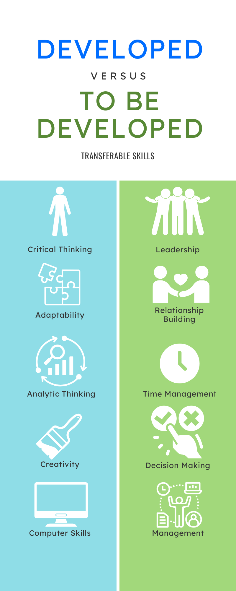

How have I been aware of myself?🧐
My Skills
Over the span of this course, I became aware of the transferable skills I had already developed and those I have yet to. Skills like critical thinking, and computer skills were ones I developed from previous projects. Despite some of the skills like collaboration that I already involved myself in, they are not aspects of myself I am absolutely great at. Which is why they are skills I must focus more on.
An interview with an employee with a career of interest
Products that changed my thinking.😊
Resume
This resume is a tailored one to fit the application to a summer student job in Informational Technology. Making a resume really made me learn how I can effectively format and market my skills to a specific target job. I have saved a "master" resume file which I can alter to fit each and every job I apply to.
Cover Letter
*info*
Budget
*info*